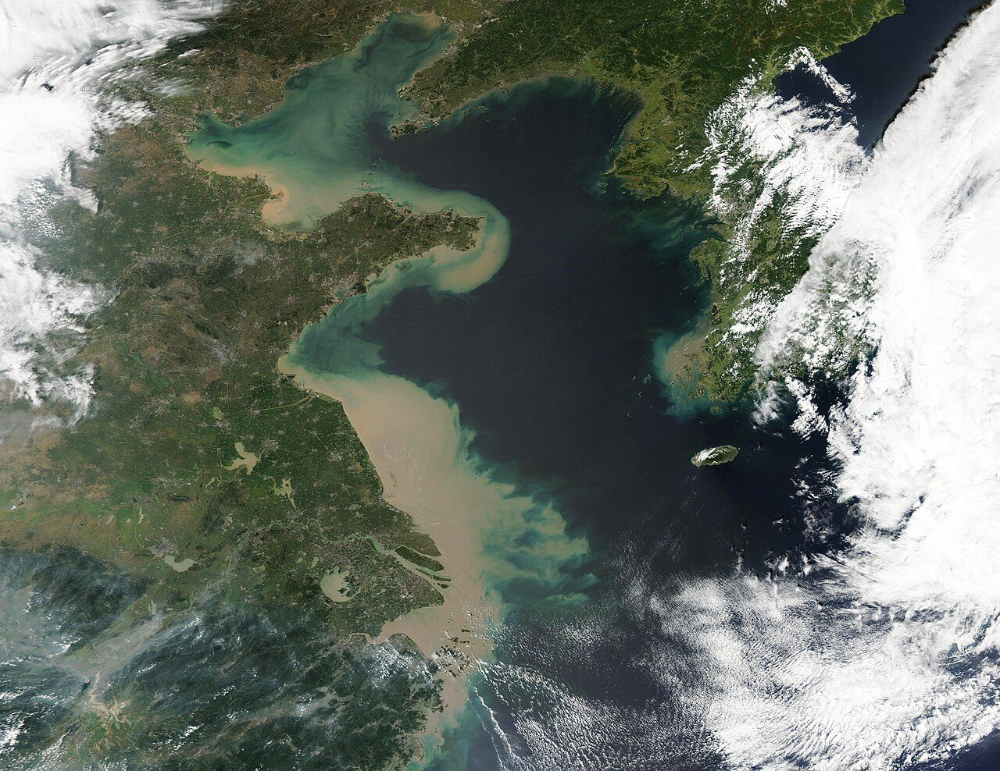
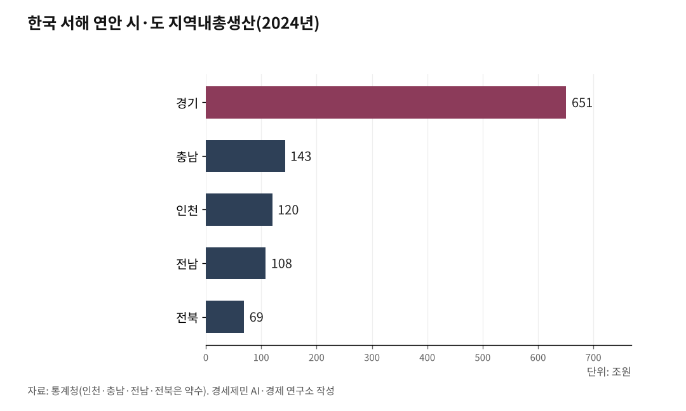

[인천해양산업, 생존기로⑪] 10조달러 경제권 관문, 전략도 기관도 없다
일본·독일 GDP 넘는 초대형 경제권, 인천은 관문만 지킨다
환황해 10.6조달러 경제권, 인천엔 싱크탱크가 없다
황해를 사이에 두고 세계 최대 경제권이 마주한다
AI경제저널=김갑봉 기자 | 황해 양쪽에 초대형 경제권이 펼쳐져 있다. 중국 연해 성·직할시와 한국 서해 연안 시·도를 합치면 GDP 10조달러를 넘는 경제권이 된다.

인천항에서 카페리(car ferry, 차량과 여객을 함께 싣는 여객화물선)와 컨테이너선이 오가는 중국 연해 성·직할시 9개의 역내총생산(Gross Regional Domestic Product, GRDP) 합산액은 약 67조7000억위안(약 1경2710조원)이다(2024년, 각 성·직할시 통계국). 달러로 바꾸면 약 9조4200억달러(약 1경2720조원)다(2024년 연평균 환율 1달러=7.19위안, 1달러=1350원 기준). 산둥성 9조8566억위안(약 1851조원), 장쑤성 13조7008억위안(약 2572조원), 광둥성 14조1634억위안(약 2659조원), 저장성 9조100억위안(약 1692조원), 랴오닝성 3조2613억위안(약 612조원), 허베이성 4조7527억위안(약 892조원), 톈진시 1조8024억위안(약 338조원), 푸젠성 5조7761억위안(약 1085조원), 상하이시 5조3927억위안(약 1013조원)이다.
한국 서해 연안 시·도 5개의 GRDP를 더하면 약 8000억달러(약 1080조원)다(2024년, 통계청). 경기도 651조원, 인천 약 120조원, 충남 약 143조원, 전남 약 108조원, 전북 약 69조원이다.
합산하면 약 10조2000억달러(약 1경3790조원). 일본 GDP 4조달러(약 5400조원), 독일 4조5000억달러(약 6075조원)를 훌쩍 넘는다. 세계 어디에도 이만한 규모의 연해경제권이 하나의 바다를 사이에 두고 마주한 사례가 없다.

인천항, 이 거대한 교역의 64%를 담당한다
인천항은 이 초대형 경제권의 한국 측 관문이다. 2024년 인천항 컨테이너 물동량은 355만8455TEU(Twenty-foot Equivalent Unit, 20피트 컨테이너 1개 기준 단위)로 역대 최대를 기록했다(인천항만공사). 수출 173만7129TEU, 수입 177만2061TEU, 환적(트랜스십먼트·transshipment, 다른 배로 화물을 옮겨 싣는 것) 4만9265TEU였다.
핵심은 대중국 비중이다. 수출의 66.0%가 중국행이었다. 수입도 56.2%가 중국에서 왔다. 수출과 수입을 합치면 인천항 전체 컨테이너 교역 가운데 약 64%가 중국과 오간 셈이다. 대중국 물동량은 전년보다 12만4186TEU 늘었다.
인천항은 카페리 항로로도 중국과 직결돼 있다. 현재 운항 중인 한중 카페리는 노선 10개다. 여객 수송을 재개한 항로가 7개(칭다오, 웨이하이, 스다오, 옌타이, 롄윈강, 다롄, 단둥)이고 화물만 운항하거나 미재개 항로가 3개(잉커우, 친황다오, 톈진)다. 단둥 항로는 코로나19로 2020년 1월 중단된 뒤 5년 2개월 만인 2025년 4월 28일 여객 수송을 재개했다.
부산항이 대일본 교역과 환적 중심이라면 인천항은 대중국 수출입의 최전선이다.
중국 북부와 가장 가까운 항만
인천은 중국 북부 연해 도시와 가장 가까운 한국 항만이다. 인천에서 웨이하이까지 약 370km, 카페리로 약 15시간이다. 인천에서 칭다오까지 약 590km, 부산에서 상하이까지 약 870km보다 280km 짧다.
1990년 인천-웨이하이 항로가 열렸다. 한중 수교 2년 전이다. 위동항운유한공사가 한중 합작(50:50)으로 설립돼 뉴골든브릿지호를 투입했다. 한중 해상 교역의 첫 장을 연 것이다. 이 항로 하나로 웨이하이의 숙박업, 요식업, 서비스업이 성장했고 한국 재래시장에는 중국 보따리상이 드나들었다.
35년이 지난 지금 인천항 국제여객터미널 1일 평균 이용객은 1026명이다(2025년 5월 기준, 인천항만공사). 코로나19 이전 연간 200만명에 비하면 절반도 회복하지 못했다. 항로는 열려 있지만 전략은 없다.
자유무역협정이 보장한 협력축, 10년째 절반만 쓴다
2015년 한중 자유무역협정(Free Trade Agreement, FTA)이 인천경제자유구역(Incheon Free Economic Zone, IFEZ)과 웨이하이시를 지방경제협력 시범지구로 지정했다. 양 도시는 같은 해 "지방경제협력 강화합의서"를 체결하고 매년 공동위원회를 열었다. 2025년까지 8회 개최됐고 협력 합의 100건 이상이 이뤄졌다.
수치로 보면 성과가 있다. 한국과 웨이하이 간 무역은 2014년 320억9000만위안(약 6조250억원)에서 2024년 538억6000만위안(약 10조1130억원)으로 67.8% 늘었다. 웨이하이가 한국에 투자해 설립한 기업은 2014년 15개에서 2024년 62개로 4배 이상 증가했다. 한국 대상 크로스보더(cross-border, 국경 간) 전자상거래 소매 수출은 7년 연속 산둥성 1위, 2024년에는 중국 국내 1위를 차지했다(신화통신 2025.6.9).
문제는 비대칭이다. 웨이하이는 한중 FTA 지역경제협력 조정사무소와 홍보센터를 설립하고 해운·육운 연계로 국가철로망에 편입하는 구체적 전략을 추진했다. 인천은 달랐다. 조형진 교수(2019) 분석을 보면 인천은 중앙정부 주도로 하향식 선정됐고 시장이 바뀔 때마다 정책이 단절됐다. 대규모 일회성 행사가 반복됐을 뿐 전략적 연속성은 없었다. FTA가 보장한 협력축을 10년째 절반만 쓰고 있는 것이다. 시범지구 성과를 분석하고 다음 단계를 설계할 연구 주체가 인천에 없기 때문이다.
미중 갈등, 인천항에 직격탄을 날렸다
2025년 4월 트럼프 행정부가 상호관세를 발표했다. 중국 34%, 베트남 46%의 관세가 부과됐다. 인천항 전체 컨테이너 물동량의 71.6%(255만TEU)가 중국·베트남 교역이다(2024년 기준, 인천항만공사). 직격탄이었다.
2025년 상반기 인천항 컨테이너 물동량은 168만TEU로 전년 동기 대비 5.9% 감소했다. 1분기에는 80만TEU로 7.6%나 줄었다(인천투데이 2025.7.8). 글로벌 선사가 수익성이 높은 미주 항로에 선박을 집중 배치하면서 인천항 기항 횟수가 줄어든 탓이다.
10월에는 미중 항만 수수료 상호 부과가 시작됐다. 미국은 중국산 선박에 톤당 최대 50달러(약 6만7500원), 중국은 미국 기업 선박에 톤당 400위안(약 7만5100원)을 매겼다. 자동차 수출도 타격을 받았다. 인천 내항에서 2024년 수출된 차량 29만여대 가운데 3분의 2는 한국지엠 부평공장 생산분으로 대부분 미국행이었다. 트럼프의 외국산 자동차 25% 관세가 직접적 충격이 됐다.
한국해양수산개발원(KMI)은 2026년 인천항 물동량이 357만TEU로 반등할 것으로 전망했다(2026.1.21 세미나). 그러나 전망은 전망일 뿐이다. 미중 갈등이 구조적으로 심화되는 상황에서 인천항 물동량 변동을 분석하고 대응 전략을 수립할 기관이 인천에 없다는 것이 문제 본질이다.
전략을 세울 기관이 없다
부산에는 한국해양수산개발원(KMI), 한국해양과학기술원(KIOST), 국립수산과학원이 있다. 해양·수산·해운·항만 정책을 연구하고 정부에 자문하는 싱크탱크(think tank, 정책연구기관)가 집중돼 있다. KMI만 해도 해양정책연구, 항만수요분석, 해운시장 전망, 수산경제 연구를 수행하는 국내 유일의 해양수산 종합 정책연구기관이다.
인천에는 이에 대응하는 기관이 하나도 없다. 10조2000억달러(약 1경3790조원) 경제권 한가운데에서 관문을 지키면서 전략을 세울 연구기관이 전무하다. FTA 시범지구 10년 성과를 평가할 기관이 없다. 미중 갈등이 인천항에 미치는 영향을 분석할 기관이 없다. 카페리 여객 회복 전략을 설계할 기관이 없다. 해상풍력 배후항만과 복합물류를 연구할 기관이 없다.
인천은 세계 최대 연해경제권 한가운데에 있다. 대중국 컨테이너 수출의 66%를 처리하고 카페리 노선 10개로 중국 연해 도시와 직결돼 있다. 한중 FTA가 지방경제협력 시범지구까지 보장했다. 그런데 이 모든 자산을 전략으로 바꿀 연구기관이 없다. 관문은 열려 있지만 전략은 없는 구조다. 이 구조를 바꾸지 않으면 10조2000억달러 경제권의 관문은 그저 화물이 지나가는 통로로 남을 뿐이다.
참고문헌
- 조형진, 「한국과 중국의 도시외교: 한중 FTA 지방협력 시범지구 선정에 따른 인천과 웨이하이의 사례」, 국제·지역연구, 2019. https://www.kci.go.kr/kciportal/ci/sereArticleSearch/ciSereArtiView.kci?sereArticleSearchBean.artiId=ART002483434
- 국가데이터처 「2024년 지역소득」 인용, 김세훈, "지난해 지역경제 수도권 쏠림 더 커져···성장률 1위는 경기, 충북·대구·강원은 '뒷걸음질'", 경향신문, 2025년 12월 23일. https://www.khan.co.kr/article/202512231604001
- 张未央, "经济大省'年报'陆续发布，苏鲁浙川豫GDP增速高于全国", 澎湃新闻, 2025년 1월 20일. https://www.thepaper.cn/newsDetail_forward_29975936
- 인천항만공사 발표 인용, "인천항, 2024년 '컨' 물동량 역대 최대기록 경신", 쉬핑뉴스넷, 2025년 2월 2일. https://www.shippingnewsnet.com/news/articleView.html?idxno=63194
- 김주엽, "미국 상호관세에 물동량 뚝… 비상등 켜진 인천·평택항", 경인일보, 2025년 4월 6일. https://www.kyeongin.com/article/1735183
- 이종선, "올 상반기 인천항 물동량 6% 급감...IPA-부두운영사 '반등 총력'", 인천투데이, 2025년 7월 8일. https://www.incheontoday.com/news/articleView.html?idxno=305030
- 박지현, "컨테이너 357만TEU 전망…올해 인천항 물동량 흐름은?", 경인방송, 2026년 1월 21일. https://news.ifm.kr/news/articleView.html?idxno=462890
- 신화통신(Xinhua Silk Road), "인천•웨이하이, 지역 협력 강화에 박차", PR Newswire 배포, 2025년 6월 9일. https://www.theteams.kr/news/detail/3462
사진 출처
· [대표사진] MODIS Land Rapid Response Team, NASA GSFC, "Storm-driven Sediment in the Yellow Sea (MODIS 2022-09-21).jpg", 위키미디어 공용, 퍼블릭 도메인, https://commons.wikimedia.org/wiki/File:Storm-driven_Sediment_in_the_Yellow_Sea_(MODIS_2022-09-21).jpg
※ 바로잡습니다(2026.10.22) 위안화를 원화로 바꾼 값이 본문이 밝힌 환율(1달러=7.19위안, 1달러=1350원)과 맞지 않았다. 웨이하이와 한국 무역 538억6000만위안은 「약 1조2870억원」이 아니라 약 10조1130억원이다. 중국 연해 9개 성·직할시 GRDP 합산은 아홉 곳 값을 더하면 약 67조7000억위안이다. 원화 환산값과 합계를 모두 같은 환율로 다시 셈해 바로잡았다.
※ 이 기사는 인공지능을 활용해 작성했습니다.
관련기사
- 인하대 해양전문대학원, 지금 만들면 된다
- [인천 해양산업, 생존의 기로⑦] 통합 국립해양대 인천캠퍼스 설립 경로
- [인천해양산업, 생존기로⑫] 남북교류 재개되면, 인천은 준비돼 있나
- [인천해양산업, 생존기로⑫-하] 남북철도 미지수, 중국 항만을 활용하라
저작권자 © AI경제저널 무단전재 및 재배포, AI학습 및 활용 금지